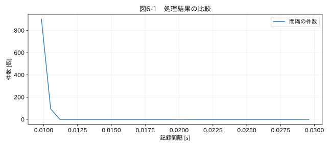

第II部 時間軸を修復する / 第06章
この章の節
不規則なサンプリング間隔
学習目標
サンプリング周期と周波数を計算し、ジッターと欠落を区別する。非等間隔の値に等間隔用のFFTやフィルタをそのまま適用できない理由を説明する。
6.1 100 Hzで設定したのに等間隔ではない
ロガーを100 Hzに設定しても、保存時刻の差が毎回0.010秒とは限らない。取得時計自体の揺れ、OSによる処理遅延、時刻の丸め、受信時刻の記録などが原因になる。ADCが厳密な周期で測定し、受信側が不規則にタイムスタンプを付けた場合、信号のサンプリングと時刻の観測を分けて考える必要がある。
本章のコードでは、0.01秒周期に標準偏差0.0001秒の時刻の揺れを与え、さらに3点を落とす。これは計測器の性能保証を模したものではなく、ジッターと欠落が記録間隔へどう現れるかを調べる教材である。
6.2 周期と周波数
等間隔サンプリングでは fₛ = 1 / Δt、ナイキスト周波数は f_N = fₛ / 2 である。Δt=0.010 sならfₛ=100 Hz、f_N=50 Hzとなる。ナイキスト周波数は、その周波数まで何の条件もなく正確に測れるという保証ではない。信号が帯域制限され、適切な取得と再構成が行われるという前提がある。境界そのものの正弦波は位相によってサンプルがすべてゼロにもなり得る。
不規則な時刻列では、一つの周期が存在しない。平均間隔や中央値の逆数は代表的なレートだが、厳密な等間隔性を保証しない。平均だけでなく、最小、中央値、上位分位、最大、負の差、ゼロ差を確認する。図6-1のヒストグラムは、代表値の近くの分布と、欠落による約2倍・3倍の間隔を区別する助けになる。
6.3 ジッターが波形へ与える影響
正弦波 x(t)=A sin(2πft) を時刻誤差δtで観測すると、小さい誤差では δx ≈ 2πfA cos(2πft) δt となる。誤差の影響は周波数に比例する。同じ0.1 msの時刻誤差でも、ゆっくりした温度と高速な振動では重要度が異なる。
位相誤差の大きさは δφ = 2πf δt である。130 Hzで1 msずれると約0.817 rad、約46.8°となる。見た目には小さい時刻差でも、二点の振動位相からモード形状を判断する場合には大きな誤差になる。
6.4 欠落数を推定する
予定周期Δt₀が分かり、ジッターが十分小さいとき、隣接間隔dから max(round(d/Δt₀)−1, 0) を欠落数の候補とできる。0.03秒の間隔が0.01秒周期に現れたなら、間の2点が欠けた可能性がある。ただし記録停止や周期変更でも同じ間隔が生じる。推定欠落数は証拠ではなく、連番・イベントログとの照合対象である。
予定時刻への割り当てでは、許容時刻誤差を定め、一つのスロットに複数の観測が入った場合も記録する。単純な reindex() は、少しずれた時刻をすべて欠損に変えることがある。観測時刻を捨てずに、予定スロット番号と時刻残差を追加する。
関連する詳細実験は実践補講に掲載。入力形式・同期・補間・校正・多変量・チャンク境界を扱う。
実行するコードと結果
run.py · 共通処理の全ソース
教材フォルダで python examples/chapter06/run.py を実行。以下は省略のないスクリプト。共通モジュールは教材一式に含む。
from pathlib import Path
import sys
ROOT=Path(__file__).resolve().parents[2]
sys.path.insert(0,str(ROOT))
sys.path.insert(0,str(ROOT/'examples'))
import numpy as np
import pandas as pd
from common import load,truth,seconds,plot
from tsclean.core import numeric,timestamps,time_flags,hampel,freeze_candidates,interpolate_short,compare
rng=np.random.default_rng(6)
nominal=.01
t=np.arange(1000)*nominal+rng.normal(0,.0001,1000)
t=np.delete(t,[200,201,600]);dt=np.diff(t)
estimated=np.maximum(np.rint(dt/nominal).astype(int)-1,0)
print('周期中央値 [s]:',round(float(np.median(dt)),6),'推定欠落数:',int(estimated.sum()))
print('設定fs [Hz]:',1/nominal,'Nyquist [Hz]:',1/(2*nominal))
hist,bins=np.histogram(dt,bins=30)
plot(6,(bins[:-1]+bins[1:])/2,{'間隔の件数':hist},'件数 [個]',xlabel='記録間隔 [s]')
検証環境での実行結果を開く
周期中央値 [s]: 0.010004 推定欠落数: 3
設定fs [Hz]: 100.0 Nyquist [Hz]: 50.0

6.5 非等間隔のまま使える分析
時刻に対する散布図や、実際の時間差を使った傾き、時間を重みにした積分などは非等間隔でも定義できる。例えばエネルギー積分は台形則 Σ (Pᵢ+Pᵢ₊₁)(tᵢ₊₁−tᵢ)/2 と書ける。ただし長い空白を台形で橋渡しすれば、欠損を暗黙に補間したことになる。積分可能な最大間隔を決め、未評価時間を報告する。
通常のFFTやデジタルIIRフィルタは等間隔のサンプルを前提とする。非等間隔スペクトル分析には別の方法もあるが、記録欠落やセンサー応答の問題まで解決するわけではない。まず必要な帯域と時刻品質を確認し、規則的な区間だけを使うか、根拠を持って再サンプリングする。
演習
基礎演習
0.002秒周期のサンプリング周波数とナイキスト周波数を計算する。
応用演習
ジッターの標準偏差を0.0001秒から0.004秒に変える。欠落数推定はなぜ不安定になるか。
実務演習
振動のADCは1000 Hz固定だが、CSVの時刻は受信時刻で不規則である。記録時刻から補間する前に、何を調べるべきか。
演習解答・解説を表示する
基礎：fₛ=500 Hz、f_N=250 Hz。250 Hzでの振幅や位相の正確性まで保証してはいない。
応用：揺れが予定周期の大きな割合を占め、丸めたd/Δt₀が欠落を示すとは限らなくなる。逆転も起こり得る。推定規則の前提から外れている。
実務：機器内のサンプル番号、ブロック長、ブロック取得開始時刻、ADCクロック精度、通信再送・欠落を調べる。連続取得が確認できれば、受信時刻の揺れを信号の揺れとして補間する必要はない場合がある。
章末まとめ
周期設定、実際の取得周期、保存された時刻は同じものとは限らない。時間差の分布と機器の記録仕様をセットで確認する。